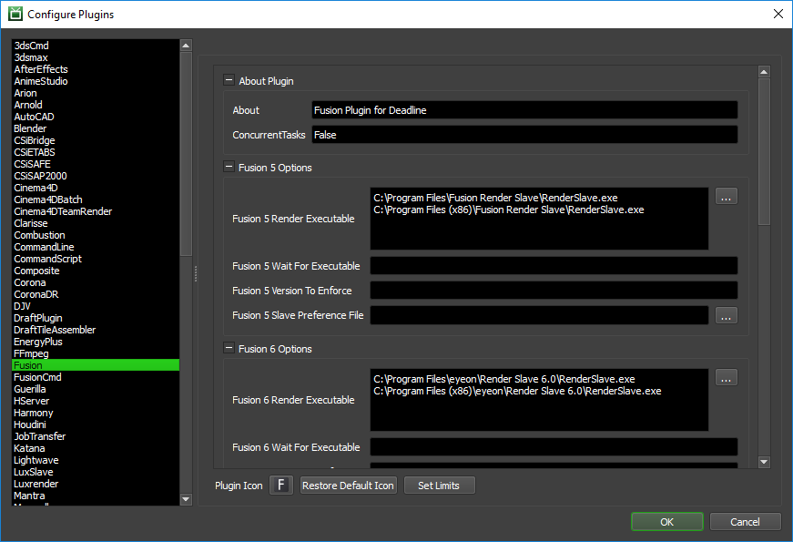
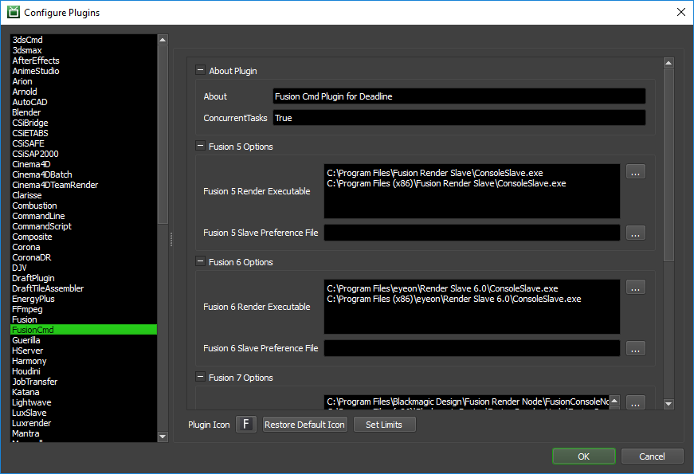

Fusion¶
Job Submission¶
You can submit jobs from within Fusion by installing the integrated submission script, or you can submit them from the Monitor. The instructions for installing the integrated submission script can be found further down this page.
To submit from within Fusion, select Script -> DeadlineFusionClient.

Submission Options¶
The general Deadline options are explained in the Job Submission documentation, and the Draft/Integration options are explained in the Draft and Integration documentation.
Fusion Comp: The flow/comp file to be rendered.
Frame List: The list of frames to render.
Frames Per Task: This is the number of frames that will be rendered at a time for each job task.
Proxy: The proxy level to use (not supported in command line mode).
Version: The version of Fusion to render with.
Build: Force 32 or 64 bit rendering. Default is None.
Use Frame List In Comp: Enable this option to pull the frame range from the comp file.
Check Saver Output: If checked, Deadline will check all savers to ensure they have saved their image file (not supported in command line mode). Note that this setting is just called “Check Output” in the Monitor submitter.
High Quality: Whether or not to render with high quality (not supported in command line mode).
Command Line Mode: Render using separate command line calls instead of keeping the scene loaded in memory between tasks. Using this feature disables the High Quality, Proxy, and Check Saver Output options. This uses the FusionCmd plugin, instead of the Fusion one.
Submit Comp File With Job: If this option is enabled, the flow/comp file will be submitted with the job, and then copied locally to the Worker machine during rendering. Note that this setting is just called “Submit Comp File” in the Monitor submitter.
In-app submitter submission options.
Render First And Last Frames First: The first and last frame of the flow/comp will be rendered first, followed by the remaining frames in the sequence. Note that the Frame List above is ignored if this box is checked (the frame list is pulled from the flow/comp itself).
Plugin Configuration¶
You can configure the Fusion and FusionCmd plugin settings from the Monitor. While in power user mode, select Tools -> Configure Plugins and select the Fusion plugin from the list on the left.
Note, if the executable supports a MAJOR.MINOR.REVISION (9.0.123) numbering system in its path, then you will need to configure the explicit exe path to the particular revision that you have installed on your machines. Deadline does not track every possible revision available or indeed where it might be custom installed to, so a studio should verify their exe paths are correct for each application version they choose to use with Deadline. Multiple exe paths can still be declared and the first one that is found on a particular Worker on a particular platform will be used from the exe list.
Fusion¶
Fusion Options
Fusion Render Executable: The path to the Fusion Render Slave executable used for rendering. Enter alternative paths on separate lines. Different executable paths can be configured for each version installed on your render nodes.
Fusion Wait For Executable: If you use a proxy RenderSlave.exe, set this to the name of the renamed original. For example, it might be set to RenderSlave_original.exe. Leave blank to disable this feature.
Fusion Version To Enforce: Deadline will only render Fusion jobs on Workers running this version of Fusion. Use a ; to separate alternative versions. Leave blank to disable this feature.
Fusion Worker Preference File: The path to a global RenderSlave.prefs preference file that is copied over before starting the Render Slave. Leave blank to disable this feature.
General Fusion Options
Load Comp Timeout: Maximum time for Fusion to load a comp, in seconds.
Script Connect Timeout: Amount of time allowed for Fusion to start up and accept a script connection, in seconds.
Path Mapping For Mixed Farms (Fusion 8 and later)
Enable Path Mapping: If enabled, a temporary Fusion file will be created locally on the Worker for rendering and Deadline will do path mapping directly in the Fusion file. Note that this feature can be switched off if there are no path mapping entries defined in Repository Options.
Fusion Quicktime Options
Show Rendering Progress: If enabled, the progress will be displayed when a Fusion Quicktime job is rendering. Note that this is for Fusion Quicktime, submitted using the Fusion Quicktime submitter.
FusionCmd¶
Fusion Render Executable: The path to the Fusion Console Worker executable used for rendering. Enter alternative paths on separate lines. Different executable paths can be configured for each version installed on your render nodes.
Fusion Worker Preference File: The path to a global RenderSlave.prefs preference file that is copied over before starting the Render Slave. Leave blank to disable this feature.
Path Mapping For Mixed Farms (Fushion 8 and later)
Enable Path Mapping: If enabled, a temporary FusionCmd file will be created locally on the Worker for rendering and Deadline will do path mapping directly in the FusionCmd file. Note that this feature can be switched off if there are no path mapping entries defined in Repository Options.
Pipeline Tools¶
When using the integrated submitter to submit through Fusion you have the ability to use any of the event plugins that you have enabled through the Deadline Monitor. This is done by opening the Pipeline Tools window via the Pipeline Tools button. This window is explained further in the Pipeline Tools documentation.
Integrated Submission Script Setup¶
The following procedures describe how to install the integrated Fusion submission script. This script allows for submitting Fusion render jobs to Deadline directly from within the Fusion editing GUI.
You can either run the Submitter installer or manually install the submission script.
Submitter Installer¶
Run the Submitter Installer located at
<Repository>/submission/Fusion/Installers.
Manual Installation¶
Fusion 7 and earlier:
Copy the file:
[Repository]\submission\Fusion\Client\DeadlineFusionClient.eyeonscript to [Fusion Install Directory]\Scripts\Comp
Restart Fusion to find the DeadlineFusionClient option in the Script menu.
Fusion 8 and later:
On Windows, copy the file:
[Repository]\submission\Fusion\Client\DeadlineFusionClient.eyeonscript to %APPDATA%\Blackmagic Design\Fusion\Scripts\Comp
On macOS, copy the file:
[Repository]\submission\Fusion\Client\DeadlineFusionClient.eyeonscript to ~/Library/Application Support/Blackmagic Design/Fusion/Scripts/Comp
On Linux, copy the file:
[Repository]\submission\Fusion\Client\DeadlineFusionClient.eyeonscript to ~/.fusion/BlackmagicDesign/Fusion/Scripts/Comp
Restart Fusion to find the DeadlineFusionClient option in the Script menu.
Custom Sanity Check Setup¶
In the [Repository]/submission/Fusion/Main folder, you can create a file called CustomSanityChecks.eyeonscript. This script will be called by the main Fusion submission script before submission, and can be used to perform sanity checks. Within this script file, you must define this function, which is called by the main script:
function CustomDeadlineSanityChecks(comp)
local message = ""
...
return message
end
All your checks should be placed within this function. This function should return a message that contains the sanity check warnings. If an empty message is returned, then it is assumed the sanity check was a success and no warning is displayed to the user. Here is a simple example that checks if any CineFusion tools are being used in the comp file:
function CustomDeadlineSanityChecks(comp)
local message = ""
-----------------------------------------------------
-- RULE: Check to make sure Cinefusion is disabled
-----------------------------------------------------
cinefusionAttrs = fusion:GetRegAttrs("CineFusion")
if not (cinefusionAttrs == nil) then
cinefusion_regID = cinefusionAttrs.REGS_ID
local i = nil
for i, v in comp:GetToolList() do
if (v:GetID() == cinefusion_regID) then
if (v:GetAttrs().TOOLB_PassThrough == false) then
message = message ..
"CineFusion '" ..
v:GetAttrs().TOOLS_Name ..
"' should be disabled\n"
end
end
end
end
return message
end
FAQ¶
Which versions of Fusion are supported?
Fusion 5 and later are supported.
What’s the difference between the Fusion and FusionCmd plugins?
The Fusion plugin starts the Fusion Render Node in server mode and uses eyeonscript to communicate with the Fusion renderer. Fusion and the comp remain loaded in memory between tasks to reduce overhead. This is usually the preferred way of rendering with Fusion.
The FusionCmd plugin renders with Fusion by executing command lines, and can be used by selecting the Command Line mode option in the Fusion submitter. Because Fusion needs to be launched for each task, there is some additional overhead when using this plugin. In addition, the Proxy, High Quality, and Saver Output Checking features are not supported in this mode. However, this mode tends to print out better debugging information when there are problems (especially when the Fusion complains that it can’t load the comp), so we recommend using it to help figure out problems that may be occurring when using the Fusion plugin.
Can I use both workstation and render node licenses to render jobs in Deadline?
You can use workstation licenses to render, you just need to do a little tweaking to get this to work nicely. In the Plugin Configuration settings, you need to specify two paths for the render executable option. The first path will be the render node path, and the second will be the actual Fusion executable path. You then have to make sure that the render node is not installed on your workstations. Because you have specified two paths, Deadline will only use the second path if the first one doesn’t exist, which is why the render nodes can’t be installed on your workstations.
Why is it not possible to have to 2 instances of Fusion running?
With Fusion there is only one tcp/ip port to which eyeonscript (the scripting language used to run Fusion renders on a Worker computer) can connect. If Fusion is open on a Worker computer then the port will be in use and the Fusion Render Node will have to wait for the port to become available before rendering of Fusion jobs on that Worker can begin.
Fusion alone renders fine, but with Deadline, the Workers are failing on the last frame.
This is usally accompanied by this error message:
INFO: Checking file \\path\to\filename####.ext INFO: Saver "SaverName" did not produce output file. INFO: Expected file "\\path\to\filename####.ext" to exist.The issue likely has to do with the processing of fields as opposed to full frames. When processing your output as fields, the frames are rendered in two halves (for example, frame 1 would be rendered as 1.0 and 1.5). This error often occurs when the Global Timeline is not set to include the second half of the final frame. Simply adding a .5 to the Global End Time should resolve this issue.
For example, let us assume that you are processing fields and your output range is 0 - 100. If the Global Timeline is set to be 0.0 - 100.0, Fusion will render everything, but Deadline will fail on the last frame. If the Global Timeline is set to be 0.0 - 100.5, Deadline will render everything just fine.
Is there a way to increase Deadline’s efficiency when rendering Fusion frames that only take a few seconds to complete?
Rendering these frames in groups (groups of 5 for example) tends to reduce the job’s overall rendering time. The group size can be set in the Fusion submission dialog using the Task Group Size option.
Does Fusion cache data between frames on the network, in the same way it does when rendering sequences locally?
Deadline renders each block of frames using the eyeonscript comp.render function. The Fusion Render Node is kept running between each block rendered, so when Fusion caches static results, it can be used by the next block of frames to be rendered on the same machine.
Fusion seems to be taking a long time to start up when rendering. What can I do to fix this?
If you are running Fusion off a remote share, this can occur when there is a large number of files in the Autosave folder. If this is the case, deleting the files in the Autosave folder should fix the problem.
Can I use relative paths in my Fusion comp when rendering with Deadline?
If your comp is on a network location, and everything is relative to that network path, you can use relative paths if you choose the option to not submit the comp file with the job. In this case, the Workers will load the comp directly over the network, and there shouldn’t be any problems with the relative paths. Just make sure that your render nodes resolve the paths the same way your workstation does.
Can’t find the RenderSlave and ConsoleSlave for Fusion 7.7 and higher?
Since Black Magic Design purchased Fusion from Eyeon, the executables have had a name change from Fusion 7.7 and higher as follows:
Fusion = RenderSlave.exe (Eyeon) –> FusionRenderNode.exe (Black Magic Design)
FusionCmd = ConsoleSlave.exe (Eyeon) –> FusionConsoleNode.exe (Black Magic Design)
These changes can be made from the Monitor’s plugin-settings.
Error Message and Meanings¶
This is a collection of known Fusion error messages and their meanings, as well as possible solutions. We want to keep this list as up to date as possible, so if you run into an error message that isn’t listed here, please visit the Thinkbox Help Centre and let us know.
Exception during render: Could not kill process with name fuscript because: Access is denied (System.ComponentModel.Win32Exception)
- This error usually occurs if the fuscript executable could not be stopped. Starting in Fusion 9, the service “FusionServer” is automatically started which spawns an fuscript process which we cannot stop. If you manually stop the
service on your render nodes then we will be able to start fuscript, and will be able to render.
Exception during render: Failed to load the comp “[flowname].comp” in startjob.eyeonscript”?
This error usually occurs because the render node is missing a plugin that is referenced by the flow in question. Often this is because there is a plugin installed on the machine from which the job was submitted that is not in the Fusion Render Node plugin directory on the Worker machine. It is important to remember that the Fusion Render Node has a different plugin store than Fusion – even on the same machine – thus one should ensure that the needed plugins are copied/installed in both locations.
Exception during render: The fusion renderer reported that the render failed. Scroll down to the bottom of the log below for more details.
This can occur for a number of reasons, but often Fusion will print out the cause for the error. In the error log window, scroll to the end of the Worker Log capture which is near the bottom of the error message window, and there will be a part which looks something like the following message. This particular message indicates that a font was missing on the machine.
INFO: Render started at Wed 8:17PM (Range: 198 to 198) INFO: INFO: Comments: Could not find font “SwitzerlandCondensed” INFO: INFO: Saver 1 failed at time 198 INFO: INFO: Render failed at Wed 8:18PM! Last frame rendered: (none)! INFO: INFO: Render failed
We’ve usually found that the problem behind this error was a plugin that was installed for Fusion, but not for the Fusion Render Node. Try updating your Fusion Render Node plugins to match your Fusion plugins exactly, and check whether the error still occurs.
Exception during render: Eyeonscript failed to make a connection in startjob.eyeonscript - check that Eyeonscript is set to no login required?
In order to connect to the Fusion Render Node and communicate with it, Deadline uses the eyeonscript, the scripting language provided for Fusion. The script connects to the Fusion Render Node via a socket connection, which by default requires a login username and password to connect.
In order for Deadline to be able to render using a given Fusion Render Node, you must change its settings so that it no longer requires the username and password. This is done by running the Fusion Render Node, right clicking on the icon it creates, and choosing preferences. From there, pick the Script option, and you will see radio buttons, one of which says ‘No login required’. Make sure that that is the option selected, then click Save to save the preferences, and exit Fusion Render Node.
Exception during render: QXcbConnection: Could not connect to display
Fusion cannot be run as a service on Linux, as such you should not run the Deadline Worker as a service if you wish to execute Fusion jobs on Deadline.

{kind=link}
{kind=link}
{kind=link}